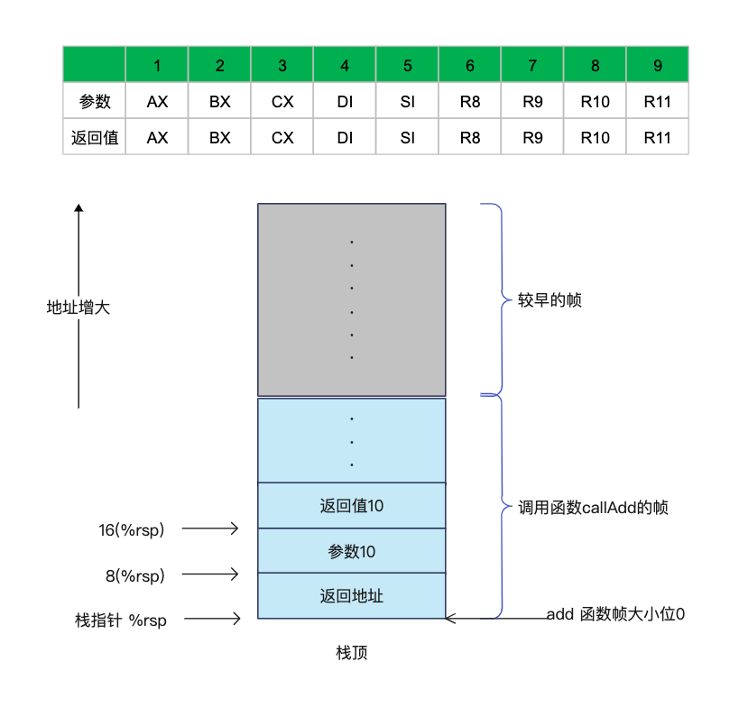
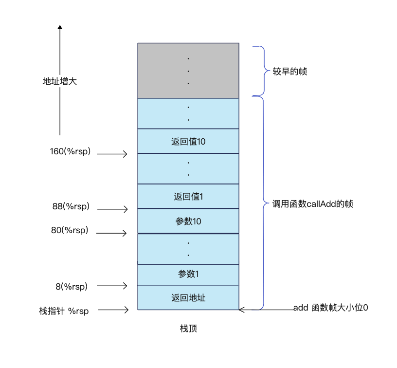
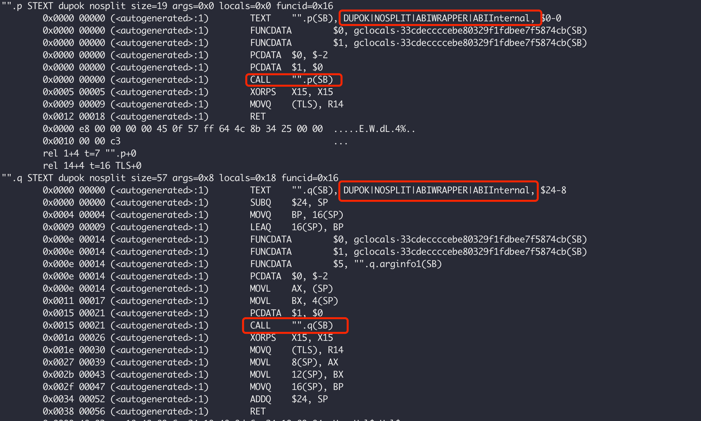

【Golang】Application Binary Interface
ABI（Application Binary Interface），即应用程序二进制接口，定义了函数调用时参数和返回值如何传递。就像C语言 x86-64 系统中，返回值保存在寄存器 %rax 中，前6个参数分别通过寄存器 %rdi，%rsi，%rdx，%rcx，%r8 以及 %r9 传递。
但是 Go 语言使用了一套跨架构通用 ABI 设计，它定义了数据在内存上的布局和函数之间的调用规约，这个调用规约是不稳定的，是会随着 Go 的版本进行变换的，称之为 ABIInternal。如果我们想开发汇编代码，应该使用稳定的 ABI0。所有原代码中定义的 Go 函数都遵循 ABIInternal，两种调用规约下的函数可以通过透明的 wrapper 相互调用。
之所以有两套调用规约，并且一个是稳定的（ABI0，承诺向后兼容），一个是不稳定的（ABIInternal，不承诺向后兼容）是因为一开始Go的调用规约约定所有的参数和返回值都通过栈传递，并且很多Go内部的包中有很多基于这个机制编写的汇编代码，例如 math/big，如果现在想升级调用规约，那么这么多汇编代码都得重写，显然不是很现实。所以，比较好的办法是引入一种新的私有约定，不承诺向后兼容，但可以在多个调用规约之间透明互调。私有的调用规约用于Go代码最终汇编的生成，稳定的调用规约用于汇编代码开发，由编译器完成两者之间的自动互调用。更多的内容可以查看 Proposal: Create an undefined internal calling convention。
Go1.17 Release Notes Compiler 就对原有的调用规约做了更新，从基于栈的参数传递更新成基于寄存器，基准测试发现，性能有 5% 的提升，二进制大小减少 2%，但是 Go1.17 只在 Amd64 平台上实现了。
Go1.18 Release Notes Compiler 开始支持 GOARCH=arm64，OARCH=ppc64, ppc64le。在 64 位 ARM 和 64 位 PowerPC 系统上，基准测试显示性能提升 10% 或更多。
也就是说，在Go的调用规约中，我们需要遵循以下这些点：
- 如果想写汇编代码，那么可以基于
ABI0，通过栈传递参数，汇编中使用FP等伪寄存器传递和访问参数以及返回值； ABI0是当前的调用约定，它在堆栈上传递参数和结果，在调用时破坏所有寄存器，并且有一些平台相关的固定寄存器；ABIInternal不稳定，可能会随版本变化。最初的时候它是与ABI0相同的，但ABIInternal为扩展提供了更多的可能性；
为了测试Go不同版本的调用规约，我们使用下面的示例代码：
1 | package abi |
测试机的系统信息如下：
Linux ecs-335906 4.18.0-348.7.1.el8_5.x86_64 #1 SMP Wed Dec 22 13:25:12 UTC 2021 x86_64 x86_64 x86_64 GNU/Linux
使用下面的指令获取Go的汇编代码：
go tool compile -S -l abi.go
go version go1.17.8 linux/amd64
从下面的汇编代码中可以看出，Go1.17 中，前9个参数是通过寄存器传递的分别是 AX，BX，CX，DI，SI，R8，R9，R10以及R11，从第10个开始在栈上传递；返回值的传递使用相同的规则。
1 | "".add STEXT nosplit size=88 args=0x58 locals=0x0 funcid=0x0 |
当调用函数 add 时，此时的栈结构如下图所示:

go version go1.16.15 linux/amd64
可以很明显的看出这个版本中指令较多，参数传递都是通过栈来传递，需要计算的时候再复制到寄存器中进行运算。
1 | "".add STEXT nosplit size=179 args=0xa0 locals=0x0 funcid=0x0 |
栈结构如下图所示：

ABIInternal 调用 ABI0 函数
假设我们有下面的Go程序，并且使用汇编实现函数p和函数q，并且采用栈传参的调用规约 ABI0，但是我们使用 Go 1.17 版本编译改代码，发现编译器会自动生成Wrapper函数。
编译方法，把 main.go 和 asm.s 保存在 msa 目录中，放在 GOPATH 目录下，使用下面的指令编译：
go version go1.17.8 linux/amd64
go build -o testmsa -gcflags=“-S -l” msa
Go编译器生成了新的函数 p 和 q，分别调用我们汇编中的函数，这样就有两个同名的函数，所以使用了 DUPOK 这个标记，允许存在多个同名函数，ABIWRAPPER 表明这只是一个 ABI 包装器。

1 | package main |
1 | #include "textflag.h" |